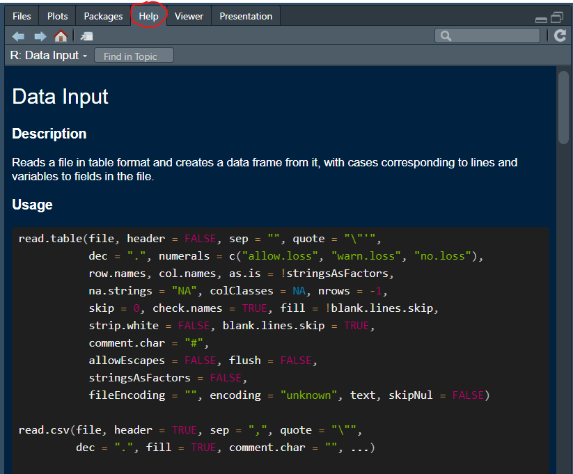

Here we will demonstrate how to load data into R. There are two ways to do this. Either you have data already in a file on your computer and then you load that file into R, or you directly link into a database from R. We will discuss both these techniques here.
When you are working with an existing datafile on your computer, then
you should first ensure that you have set your working directory such
that it points to the folder from which you are working and where you
can find your datafile. Let’s assume that you have saved mroz.csv to your working directory:
C:\Rwork. Then the command below should read
setwd("C:/Rwork"). Note that all backward slashes
(\) have to be replaced by forward slashes
(/).
setwd("XXXX:/XXXX") # replace the XXXX with your drive and pathThe datafile we practice with here is a comma separated values file
(csv). To upload such a file we use the read.csv function
as follows, assuming that the data file is in the working directory:
mydata <- read.csv("mroz.csv")This loads the data (753 observations and 22 variables), as a new
object called mydata into your environment. Check in your
environment window to confirm that it is there.
A typical erorr message at this stage is “Error in file(file,”rt”) :
cannot open the connection”. If you get that error message this is an
indicatin that the datafile you are intending to upload is not in the
working directory. You can check what the current working directory is
with getwd() in the console. Make sure that file location
and working directory are synchronised.
If you use the help function (?read.csv in the console)
you will find some guidance in the use of this function.
 As you can see there are a lot of options you can
set. One which is often important to use is the na.strings
option. Here you are telling R how missing values are coded up in the
spreadsheet you are uploading.
Let’s see why this is important. You can get a first glimpse at the
data using the str() function. This is useful as it gives
you the datatypes.
str(mydata)## 'data.frame': 753 obs. of 22 variables:
## $ inlf : int 1 1 1 1 1 1 1 1 1 1 ...
## $ hours : int 1610 1656 1980 456 1568 2032 1440 1020 1458 1600 ...
## $ kidslt6 : int 1 0 1 0 1 0 0 0 0 0 ...
## $ kidsge6 : int 0 2 3 3 2 0 2 0 2 2 ...
## $ age : int 32 30 35 34 31 54 37 54 48 39 ...
## $ educ : int 12 12 12 12 14 12 16 12 12 12 ...
## $ wage : chr "3.354" "1.3889" "4.5455" "1.0965" ...
## $ repwage : num 2.65 2.65 4.04 3.25 3.6 4.7 5.95 9.98 0 4.15 ...
## $ hushrs : int 2708 2310 3072 1920 2000 1040 2670 4120 1995 2100 ...
## $ husage : int 34 30 40 53 32 57 37 53 52 43 ...
## $ huseduc : int 12 9 12 10 12 11 12 8 4 12 ...
## $ huswage : num 4.03 8.44 3.58 3.54 10 ...
## $ faminc : int 16310 21800 21040 7300 27300 19495 21152 18900 20405 20425 ...
## $ mtr : num 0.722 0.661 0.692 0.781 0.622 ...
## $ motheduc: int 12 7 12 7 12 14 14 3 7 7 ...
## $ fatheduc: int 7 7 7 7 14 7 7 3 7 7 ...
## $ unem : num 5 11 5 5 9.5 7.5 5 5 3 5 ...
## $ city : int 0 1 0 0 1 1 0 0 0 0 ...
## $ exper : int 14 5 15 6 7 33 11 35 24 21 ...
## $ nwifeinc: num 10.9 19.5 12 6.8 20.1 ...
## $ lwage : chr "1.210154" "0.3285121" "1.514138" "0.0921233" ...
## $ expersq : int 196 25 225 36 49 1089 121 1225 576 441 ...Most of the data are of the num (numeric) and
int (integer) type, but two variables (wage
and lwage) come as character/text (chr)
variables. This is awkwar as we are likely to want to use these data
(here wages) for some numerical analysis. Why did R not recognise these
numbers as numbers?
To see that, here is an excerpt of the file we just uploaded:
You can see that in the wage column there are some observations which
do not have a number but rather a “.”. This is this spreadsheet’s way of
telling you that for these observations there is no wage information.
The information is missing. Different spreadsheets code missing values
in different ways. Sometimes it will just be empty cells, sometimes it
will say “NA” or “na”. You need to help R to recognise missing values.
That is what the na.strings option in the
read.csv function does.
mydata <- read.csv("mroz.csv", na.strings = ".")You can now test with str(mydata) to confirm that the
wage and lwage data are now recognised as
numeric data.
If your data come as an excel file (mroz.xlsx),
then we need to use a different function. There are, as always,
different functions which do the same job. We recommend
read_excel which comes from the readxl package
(needs loading!). Note that the option to indicate how missing values
are coded is here called na.
library(readxl)
mydata <- read_excel("Mroz.xlsx", na = ".")There are a number of packages which facilitate the easy download of data directly from your R code. These data are then not saved on your computer. This is very convenient, but does require that you have internet access when you work.
The ones we will discuss here are:
A package that works well for downloading financial data is the
quantmod package.
library(quantmod)## Loading required package: xts## Loading required package: zoo##
## Attaching package: 'zoo'## The following objects are masked from 'package:base':
##
## as.Date, as.Date.numeric## Loading required package: TTR## Registered S3 method overwritten by 'quantmod':
## method from
## as.zoo.data.frame zooLet’s demonstrate how to download data. We will explain what happened afterwards.
getSymbols("^GSPC",env=.GlobalEnv,src="yahoo",from=as.Date("1960-01-04"),to=as.Date("2009-01-01"))## [1] "GSPC"The following things happened. The getSymbols function
went to the Yahoo database (src="yahoo") and downloaded the
data associated with the “^GSPC” symbol (The S&P500 index) for the
dates specified in the function call. Once you ran this command you
should see an object called GSPC in your environment
(env=.GlobalEnv).
Let’s download Apple share prices (“AAPL”) from 4 Jan 2000 to 1 Jan 2023:
getSymbols("AAPL",env=.GlobalEnv,src="yahoo",from=as.Date("2000-01-04"),to=as.Date("2023-01-01"))## [1] "AAPL"Confirm that you have a new object called AAPL in your
environment.
You can also download multiple series at the same time, say share prices for Amazon (“AMZN”) and Fedex (“FDX”).
getSymbols(c("AMZN","FDX"),env=.GlobalEnv,src="yahoo",from=as.Date("2000-01-04"),to=as.Date("2023-01-01"))## [1] "AMZN" "FDX"Both time-series should be saved to your environment now.
Another very useful package that can be used to access a host of
online databases is the pdfetch function. It downloads data
into the xts format which is a time-series format and
therefore, before using this, you should load (and install if you havn’t
done so yet) the pdfetch and the xls
package.
library(pdfetch)
library(xts)This package has data download functions specific to the database you
are using. Say you wish to get data from the Office for National
Statistics (ONS) in the UK, then you need to use the
pdfetch_ONS function.
To get the data you need to know what the series ID and in which
database the data are. For instance a CPI
inflation measure is in the mm23 database and the
series has ID l550. Then you can download these data as
follows:
ons_data <- pdfetch_ONS("l55o","mm23")
periodicity(ons_data)## Monthly periodicity from 1989-01-31 to 2024-08-31If you are looking for a particular series you will have to go to the
ONS homepage and search for the database and series ID information you
need. In the help for the pdfetch_ONS function you will
find a link which you can use to find the necessary information.
Check the pdfetch package information to see what other
databases can be “tapped” with this package.
In this workthrough you learned how to make data available to your code. The two techniques were to either load the data from a file on your computer or to load them directly from a database.